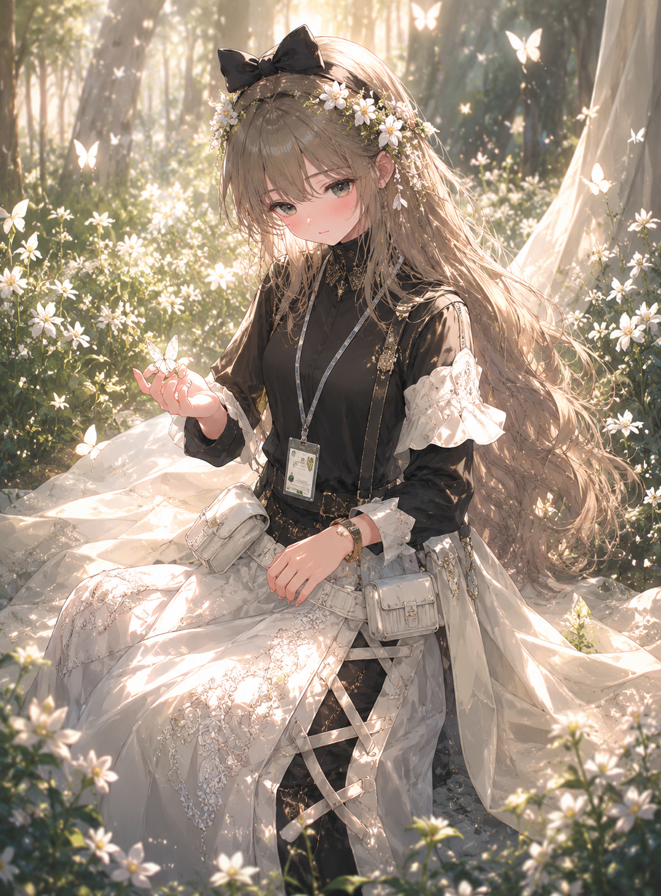

← Archive
0018
Positive Prompt
(masterpiece), (best quality), (ultra detailed), highly detailed anime fantasy illustration, beautiful girl, gentle dreamy smile, glossy eyes, delicate blush, pale porcelain skin, long silky blonde hair, soft flowing hair strands, flower crown made of white blossoms, elegant feminine face, soft eyelashes, lace dress, frilled sleeves, delicate ribbon details, soft fabric folds, graceful kneeling pose, hands resting gently on lap, innocent fairy-tale atmosphere, sitting in a glowing flower field, surrounded by blooming white flowers, glowing butterflies, magical forest background, golden sunlight filtering through trees, soft volumetric lighting, sparkling particles, dreamy nature atmosphere, dappled shadows on skin, enchanted forest mood, peaceful fantasy scenery, soft cinematic lighting, watercolor-like shading, painterly anime rendering, highly rendered eyes, delicate highlights, warm ambient glow, lush environmental details, fantasy illustration atmosphere, pixiv featured artwork, professional Japanese illustrator aesthetic, modern anime illustration style, light novel cover art, premium gacha game illustration style, toi8 inspired color harmony, sakimichan-level rendering, delicate painterly highlights, refined shadow transitions, trending on pixiv, artstation quality, visually stunning composition
Negative Prompt
negative prompt: (low quality, blurry, bad anatomy, extra fingers, extra limbs, malformed hands, poorly drawn face, duplicated limbs, rough sketch, flat colors, watermark, logo, text, jpeg artifacts, realistic photo, 3d rendering, cropped composition)
Positive Prompt (masterpiece), (best quality), (ultra detailed), highly detailed anime fantasy illustration, beautiful girl, gentle dreamy smile, glossy eyes, delicate blush, pale porcelain skin, long silky blonde hair, soft flowing hair strands, flower crown made of white blossoms, elegant feminine face, soft eyelashes, lace dress, frilled sleeves, delicate ribbon details, soft fabric folds, graceful kneeling pose, hands resting gently on lap, innocent fairy-tale atmosphere, sitting in a glowing flower field, surrounded by blooming white flowers, glowing butterflies, magical forest background, golden sunlight filtering through trees, soft volumetric lighting, sparkling particles, dreamy nature atmosphere, dappled shadows on skin, enchanted forest mood, peaceful fantasy scenery, soft cinematic lighting, watercolor-like shading, painterly anime rendering, highly rendered eyes, delicate highlights, warm ambient glow, lush environmental details, fantasy illustration atmosphere, pixiv featured artwork, professional Japanese illustrator aesthetic, modern anime illustration style, light novel cover art, premium gacha game illustration style, toi8 inspired color harmony, sakimichan-level rendering, delicate painterly highlights, refined shadow transitions, trending on pixiv, artstation quality, visually stunning composition Negative Prompt negative prompt: (low quality, blurry, bad anatomy, extra fingers, extra limbs, malformed hands, poorly drawn face, duplicated limbs, rough sketch, flat colors, watermark, logo, text, jpeg artifacts, realistic photo, 3d rendering, cropped composition)